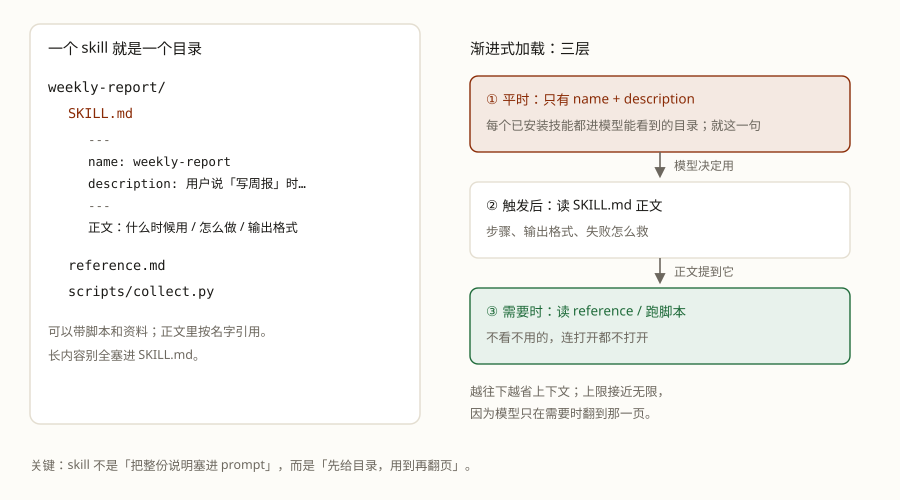

你一定干过这件事：把写周报的要求打成一段字，粘给它；下次开新对话，再粘一遍。粘到第十遍的时候，你有没有想过：这段话为什么不能让它自己记住？
能。把做法放进一个文件夹，agent 用的时候自己翻开照做，这就是 Skill（技能）。它和 MCP 在技能广场里长得几乎一样，但装完多出来的是做法，不是动作。
学完这课，你能：在已经教过它的事情里认出 Skill；说清它装的是什么、为什么正文要按需加载；用 TeleAgent 创建一个技能、测它、改它；分清 MCP 和 Skill 各管哪层、什么时候该用哪个。
MCP 给能力，Skill 给做法。这课拆后一半：做法是怎么“装”进 agent 的。判断一件东西是哪种，看它多出来的是动作还是做法。
想一个你反复交代的活：写周报要先汇总完成项，再列风险，最后写下周计划；缺数据就先问，不要编。这些步骤和判断，你对它讲过不止一遍。群里流传的“神提示词”也一样，大家复制来复制去。
问题不在它记不住，是做法散落在对话里：粘一次管一次，开个新对话就没了；换个人讲，讲法还不一样，做出来的东西时好时坏。
Skill 就是把这段话变成文件：写一次，装进 agent，每次照做。
接着上一课的比方往下走：工具是厨具，Skill 是菜谱。厨具告诉你“能切能炒”，菜谱告诉你“红烧肉该怎么做、什么时候放糖、糊了怎么办”。菜谱本身不会做菜，得有人照着做；Skill 也一样，它给的是步骤，动手的还是 agent。
具体来说，Skill 的主体是几份 Markdown 文件，外加可选的脚本和资料；模型用的时候读它。
在技能广场里，Skill 和 MCP 的东西长得一样：下载、装上、agent 变能干。上一课给过一个土办法，反过来用：装完看它多了什么。装了周报 Skill，agent 多的是“按你们的格式写周报”这个做法；装了天气 MCP，多的是“查天气”这个动作。
“装上”的动作像，里面装的东西不一样。MCP 装的是一个 server 的配置：启用后连上，server 报一份带参数的工具清单，模型照着清单挑动作。Skill 装的是一个文件包：产品启动时会扫到它，只把 name 和 description 放进模型能看到的技能目录，正文等模型决定用了才读。
一个是能调用的动作，一个是要不要翻开的手册。所以严格说，Skill 本身不是一个可调用的工具：它是被加载的说明书，真正执行动作的才是工具。
用同一个任务检验最清楚。你说“写周报”，Skill 决定先汇总什么、再列什么、输出长什么样、缺数据怎么办；周报里要“拉出本周的提交记录”，那一步是工具的事，工具可以在 Skill 的流程里被调用。做法里可以调用能力，但两者不是一回事。
为什么容易混？产品把入口做成了同一个样子，“配置不一样”这条线索就被盖住了。真正的分层是：MCP 站在“怎么接”那一层，对外的标准接口，谁来都能接；Skill 站在“怎么做”那一层，是给某个 agent 的说明书，换个产品不一定认得。接下来只看做法这一层。
做法能装进 agent，是因为它先变成了文件。文件才可装、可改、可传、可以按版本管理。一个 Skill 就是一个目录：
weekly-report/
SKILL.md ← 入口：frontmatter + 正文
reference.md ← 补充资料，用到才读
scripts/
collect.py ← 可选：确定性步骤交给脚本SKILL.md 自己长这样：
---
name: weekly-report
description: 当用户说「写周报」「汇总本周工作」时，按团队模板生成周报。
---
# 周报
## 什么时候用
...
## 怎么做
1. ...
## 输出格式
...
## 失败怎么救
...SKILL.md 头部的 YAML 叫 frontmatter，name 和 description 是必填。description 写的是“做什么 + 什么时候用”，它是模型认出这个技能的第一关。正文是第二层：什么时候用、怎么做、输出什么、出错怎么办。

name／description 进模型能看到的技能目录；模型决定用，才读 SKILL.md 正文；正文提到别的文件，再按需打开。Skill 不是 MCP 那种“连接时由 server 报一份工具清单”。它的发现走另一条路：会话开始时，产品扫一遍已安装的 Skill，只读每个 SKILL.md 头部的 name 和 description，把这一条放进模型能看到的技能目录。正文不在里面。
这份目录放在哪，各家产品不一样。Anthropic 的 Agent Skills 把它放在系统提示里；OpenCode 有一个专门加载 Skill 的 skill 工具，可用 Skill 的 name 和 description 就写在这个工具的说明里；TeleAgent 的手册只写到添加、启用和 @，没写内部放在哪。位置不同，做法是同一个：先给模型一份薄薄的目录，正文按需读。
模型觉得某个 description 和当前任务对得上，才去读 SKILL.md 正文。正文进来之后，才轮到它提到的 reference.md 或脚本。这就是渐进式加载的三层：
name＋description 进技能目录，只有名字和说明这两条。SKILL.md 正文。为什么非要这样？因为上下文是稀缺资源：进上下文的东西都要花钱、占位置，还会互相干扰（LLM 底层第 3 课讲过）。渐进式加载就是“不看不用的，连打开都不打开”，和 RAG 是同一个思想：按需取资料，而不是把整份文档塞进去。这也说明 description 为什么是第一关：平时它只有这一句话的机会。
TeleAgent 把创建技能做成了两个入口：技能广场右上角的【创建技能】，或者直接 @ 技能孵化器。入口名各家产品可能不同，产物都是 SKILL.md。这一节按 TeleAgent 2026-10-18 的手册来。
先想清一件事和一个触发点。别一上来就“帮我做个万能助手”，先定：这个技能只干什么？用户说什么话时该用它？
然后点【创建技能】，用自然语言把需求说全。可以照这个模板：
帮我创建一个技能：
- 名字：weekly-report
- 什么时候用：用户说「写周报」「汇总本周工作」时
- 输入：本周的日报/任务记录/提交记录
- 步骤：先汇总完成项，再列风险，最后写下周计划
- 输出格式：Markdown，三段：本周完成 / 风险 / 下周计划
- 边界：缺数据就先问，不要编；不写与工作无关的内容等它生成，去“我的技能”里启用。只有启用的技能才能被 @ 引用；启用上限是 50 个，别把不用的都开着。
第一次测试，先手动 @ 它，别靠自动匹配。在输入框点技能按钮，或输入 @ 选，例如：
使用 @weekly-report，把这周的日报汇总成周报。TeleAgent 的手册明确说：不指定技能时系统会自动选，但匹配不如手动指定准。第一次测试、以及技能很多时，先手动 @。
最后看它怎么用，再改。用 3 个真实任务测：两个“该触发”、一个“不该触发”。看它哪一步跑偏，回去改 description 或正文；也可以让 @技能孵化器 帮你迭代。TeleAgent 里还能看技能详情、评分；同一技能用满 20 次会触发“技能自进化”，改完可以更新到广场。
另一种是导入现成的 Skill。技能广场 → 导入技能，支持 .zip／.skill；根目录必须有 SKILL.md，头部 YAML 写 name 和 description，文件不超过 10MB。导入时会过安全审查，有风险会提示；通过后出现在“我的技能”。
走完这些，你手里就有一个能反复用的技能。接下来是怎么让它被用对。
技能能不能被用上、用得对不对，主要看几件事。
description 是第一关：写“做什么 + 什么时候用”，最好带上用户真会说的词（“写周报”“汇总本周工作”）。只写“一个周报工具”等于没写。reference.md；确定性步骤放脚本。正文保持短，才省上下文。SKILL.md 和脚本。这些功夫，都是为了让技能被反复用。只用一次的事，不值得建 Skill，直接把要求对它说清就行。
多数问题出在 description 和启用状态。先把这两处排掉，再动正文。
description 有没有写“什么时候用”；再试手动 @；最后看它是不是被停用了、启用数是不是到顶。description 写太宽（“处理文档”），把范围收窄，或拆成多个技能。SKILL.md、YAML、文件大小。先从 description、启用状态和手动 @ 这三处排；都没问题，再看正文和脚本。
Skill 不用都自己写。国内常用的入口有三个（2026-10-18 看，产品会变）。先看格式和权限，再安装。
三个入口都能拿到现成的包，差别在格式和审核方式；装之前先确认你的产品认哪种格式。安装前还要问三句：格式对得上吗（ZIP + SKILL.md？还是某个平台自己的插件？）· 要什么权限（API key、本地文件、云账号？）· 来源可信吗（技能里的指令和脚本会以你的权限跑）。
MCP 和 Skill 都见过了，回到开头那个混淆：它们在技能广场里长得一样，装完多出来的东西不一样。判断只需要一问：我要的是一个新动作，还是一个做法？
| 场景 | 更合适 |
|---|---|
| 要教 agent“什么时候用、按什么步骤做、输出什么格式” | Skill（流程里可以调 MCP 工具） |
| 要模型直接看到一个可调用函数（名字/说明/参数） | MCP 工具（或产品内置工具） |
| 只有一个产品、一个团队，工具只跑本地脚本 | Skill + 脚本（更轻） |
| 同一能力要给多个产品/多人用，或要让不同产品都能发现它、有稳定的参数定义 | MCP |
| 数据在远程，要鉴权/限流/隔离，凭据不想进模型上下文 | MCP（server 关着凭据） |
| 一次性小工具，只有你一个人用 | 直接写函数，别上 MCP/Skill |
发现方式也不一样：MCP 是 server 在连接时报一份带参数的工具清单，模型照着清单挑；Skill 是产品扫目录，只把 name 和 description 放进技能目录，正文按需读。一个发现的是动作，一个发现的是要不要翻开的手册。
本地的 MCP 和带脚本的 Skill，功能上确实有重合。一个本地 MCP server 是“跑在本机、把能力暴露出来的程序”；一个 Skill 也能带脚本在本机跑。只服务一个产品、一个团队，很多本地 MCP 确实可以用 Skill + 脚本替掉。
但“重合”不等于“一样”：Skill 管“这件事怎么做”，MCP 管“这个能力怎么被接上”。两者常常配合：Skill 写流程，流程里调 MCP 工具；或者先用 Skill 脚本跑通，等要被多个客户端复用时再抽成 MCP server。
Q1 每次都把同一段“周报格式”粘给它，最该做的改造是什么？
Q2 装完之后 agent 多了“按格式写周报”的本事，它多出来的是什么？
Q3 模型决定“要不要用某个 Skill”，第一依据是什么？
Q4 为什么 Skill 要做“渐进式加载”？
Q5 导入一个别人做的 Skill，哪条要求是对的？
Q6 只有一个产品用、只跑本地脚本的小工具，最省事的做法是？
Skill 就讲到这里。MCP 给的是能力，Skill 给的是做法；两样都装上，agent 才知道能做什么、该怎么做。下一课看多个 agent 怎么分工。
skill 工具的说明里、模型调用 skill 按需加载（2026-10-18 抓，2026-10-27 复核）。@，没有写这些信息放在哪里。
前置：Agent 篇 · 第 3 课 · MCP：给工具定一个统一插口（“多动作”的那一半）· Agent 篇 · 第 2 课 · 手写一个 agent
顺着往下：Agent 篇 · 第 5 课 · 多 agent 协作（一个 agent 干不完的活，怎么叫帮手）
LLM 底层：第 3 课 · KV Cache（“按需加载”省的就是这个）
术语表：Skill · MCP · 渐进式加载